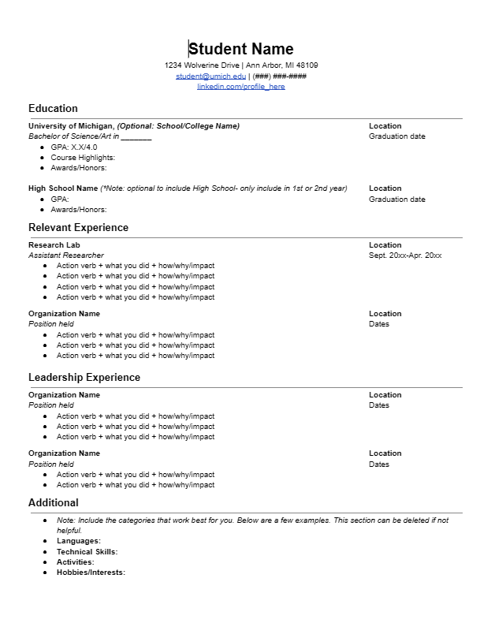

Resume Support
Craft a Resume that Tells Your Story
Your resume is often your first impression—an opportunity to highlight your unique strengths, skills, and experiences to potential employers. Whether you’re starting from scratch or looking to polish an existing resume, these resources are here to help you every step of the way.
UMSI students are in high demand, and a clear, well-organized resume will help you stand out among applicants. On this page, you'll find practical tips, templates, and guides—all tailored to the needs of School of Information students and aligned with employer expectations.

Need feedback? You can always meet with a CDO Career Coach to review your materials.
Resume Writing Made Easy: Steps to Success
- Download a UMSI-Approved Template: Start with a format that works—no need to design from scratch.
- Gather Your Experiences: List jobs, internships, volunteer roles, coursework, and projects most relevant to your goals.
- Write Impactful Bullets: Use action verbs and highlight your skills, results, and unique contributions.
- Tailor for Each Opportunity: Customize your resume for every job or internship you pursue.
- Review and Edit: Proofread for errors, check formatting, and ask for feedback from peers or a career coach.
Resume Resources
Comprehensive UMSI guide including tips, formatting rules, and sample accomplishments.
Learn how to describe your work and impact in ways employers notice.
Evaluate your resume using the same criteria as UMSI's Career Development Office.
Attend a Resume Refresh workshop, review video tutorials, or access additional templates.
Ready for review? Book a resume review appointment with a CDO Career Coach.
Resume FAQ
For most UMSI students and new grads, one page is best. More experienced professionals may require two pages.
It's wise to tailor your resume to the requirements and keywords of each opportunity.
Absolutely! UMSI coursework and projects are valued by employers, especially if they show relevant skills and impact.
Update your resume every semester, after major projects, or whenever you gain a new role or responsibility.
Using AI on Your Resume
GenAI Tools (like U-M GPT or ChatGPT) can be incredibly helpful for resumes, but don't forget to be careful with what you share. We recommend only putting personal information (like your resume) into U-M GPT.
Here are a few ways to get started:
- Brainstorming Example Prompts:
1. Copy/paste a job description and ask "Summarize the most important keywords and skills from this job description"
2. "I am about to apply for a job as an account manager at an advertising agency and I'm working on my resume. Can you ask me questions about my marketing internship to help me generate ideas for my bullet points?" - Tailoring Example Prompts:
Copy in the job description and your resume and ask "Where does my resume match up with the job description? What skills are missing from my resume that are on the job description?" - Resume Review Example Prompts:
"Review the following bullet points for how effective they will be for a data scientist role. Provide suggestions for how I could improve them" - Content Help Example Prompts:
1. Important Note: Use this as a starting point and don't just copy/paste! Recruiters tell us they can tell when something is a straight copy/paste from a GenAI tool. Edit the bullets so that they are accurate and written in your own voice.
2. "This summer I was a research assistant for Professor Smith. The project was about (add details). My specific role was (add details). The results of the experiment were (add details). I want to highlight these skills: (add details). Generate resume bullet points using the Bullet Plus Model."
3. Upload your resume then ask, "Optimize my resume for a job as a financial analyst."
Note: We recommend using U-M GPT to keep your information secure. If you use other tools, we recommend removing any personal information. It is also important to make sure you do not include any sensitive information from your employers and you're aware of any NDAs you have signed.